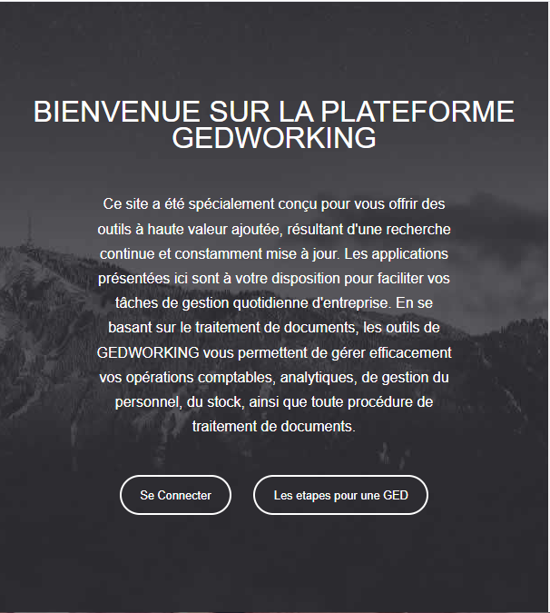
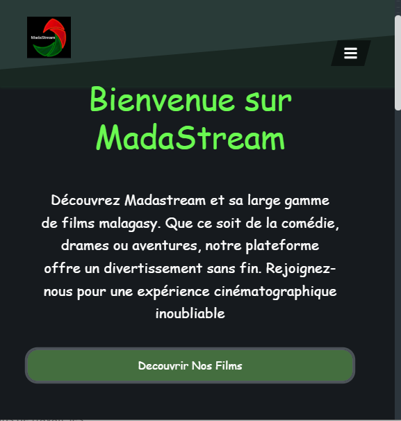
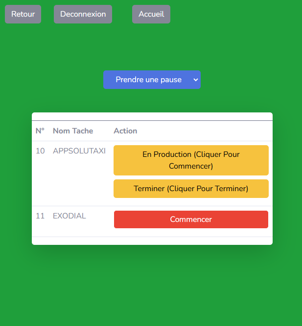
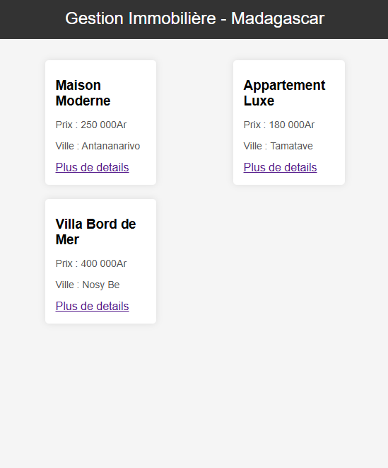
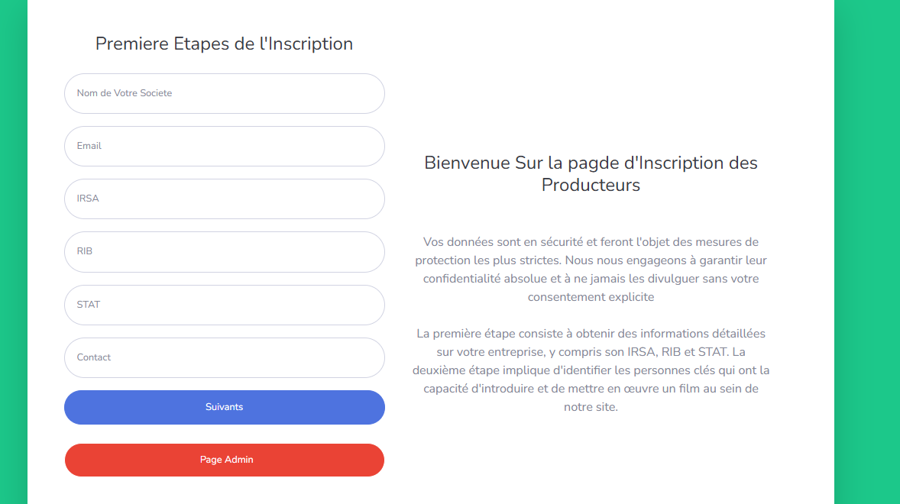

Mes projets
Mes projets
Découvrez quelques projets que j’ai déjà réalisés
Mes projets

GEDWORKING SAS(FullStack)
La création d'un logiciel de gestion électronique des documents (GED) consiste à développer une plateforme permettant de centraliser, organiser, et sécuriser les documents numériques pour une gestion efficace.
php / Mysql / HTML , CSS / Trello / Figma / Power BI / Excel

MADASTREAM (FullStack)
Un site de visionnage de films permet aux utilisateurs de regarder des films en streaming , tandis que des plateformes administratives permettent aux gestionnaires de contrôler l'ajout de contenu, la gestion des utilisateurs .

Gestion des Taches(Fullstack)
Une interface de gestion des tâches permet d'attribuer, suivre les tâches, et gérer les temps de pause et les congés des employés. Elle facilite la gestion des horaires et de la productivité au sein de l'entreprise.

Gestion immobilière (back-end)
La création d'une gestion immobilière implique la mise en place de processus pour administrer, louer, entretenir et optimiser les propriétés, tout en garantissant la rentabilité et le respect des réglementations.

Gestion des CV (FullStack)
L'automatisation de la soumission des CV en ligne permet aux candidats de télécharger leurs documents directement sur la plateforme, simplifiant ainsi le processus de recrutement en éliminant les tâches manuelles et en facilitant l'analyse rapide des profils

Gestion des employés(FullStack)
Conception et développement d’une plateforme de gestion RH complète, du suivi des employés et des présences jusqu’au calcul et à l’émission des paies
Creation Site E_commerce (FullStack)
Développement d’un site e-commerce complet offrant la possibilité de vendre, acheter et échanger des produits entre utilisateurs.
Compétences
Mes projets
Découvrez mes Compétences Techniques
Spécialisé dans les langages de programmation, aussi bien en back-end qu’en front-end, je possède également de solides notions en réseaux et j’ai suivi une formation en data analysis afin d’approfondir ma maîtrise des bases de données.
Back-end
PHP (+3 ans)
JavaScript (3 ans)
Python (+4 ans)
C# (3 ans)
Front-end
React JS (+3 ans)
HTML / CSS (4 ans)
Angular (2 ans)
Tailwind CSS (2 ans)
Base de données
MySQL (+4 ans)
PostgreSQL (4 ans)
NoSQL (2 ans)
Oracle (2 ans)
Data Analyst
Power BI (2 ans)
Excel (3 ans)
SQL (4 ans)
Tableau (1 an)
Python (Data Analysis) (4 ans)
Framework MVC
CodeIgniter (4 ans)
Laravel (2 ans)
Symfony (2 ans)
Django (2 ans)
Spring MVC (2 ans)
Express.js (2 ans)
Testeur QA
Tests fonctionnels
Tests unitaires
Tests automatisés
Selenium
JIRA
Postman
Autres outils
Figma (4 ans)
Trello (2 ans)
Git (2 ans)
Photoshop (2 ans)